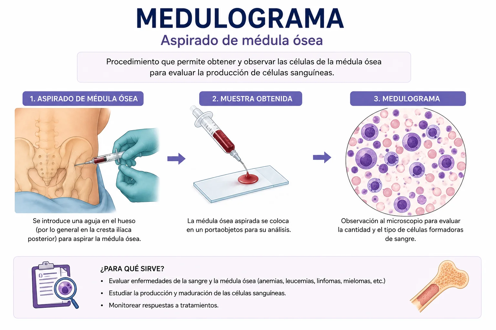

Medulograma
Aspirado de médula ósea

¿Qué es un medulograma?
El medulograma, también conocido como aspirado de médula ósea, es un procedimiento diagnóstico que consiste en extraer una pequeña muestra de médula ósea líquida mediante una aguja especial para su análisis microscópico. La médula ósea es un tejido blando localizado en el interior de los huesos y es responsable de la producción de las células sanguíneas: glóbulos rojos, glóbulos blancos y plaquetas. El procedimiento suele realizarse en la cresta ilíaca posterior (hueso de la pelvis), aunque en algunas situaciones puede efectuarse en otros huesos. Permite evaluar directamente la actividad hematopoyética de la médula ósea, es decir, la capacidad que tiene para formar células sanguíneas normales. Por ello, constituye una de las pruebas más importantes en hematología para el diagnóstico, seguimiento y pronóstico de múltiples enfermedades de la sangre.
¿Qué se evalúa o mide?
A través del estudio microscópico de la muestra se analiza la cantidad, calidad y maduración de las células que forman la sangre. Se determina la proporción entre las diferentes líneas celulares (eritroide, mieloide y megacariocítica), el grado de celularidad de la médula, la presencia de células anormales o malignas y posibles alteraciones en la formación de células sanguíneas. Además, permite identificar infiltraciones tumorales, microorganismos infecciosos, fibrosis medular y trastornos en la producción de células. También puede complementarse con estudios especializados como inmunofenotipo, citometría de flujo, citogenética y pruebas moleculares para obtener diagnósticos más precisos.
¿Por qué se realiza este examen?
El medulograma se solicita cuando existen alteraciones en los análisis sanguíneos que no pueden explicarse únicamente mediante pruebas de laboratorio convencionales. Es especialmente útil cuando el hemograma muestra disminución o aumento anormal de glóbulos rojos, glóbulos blancos o plaquetas. Asimismo, se realiza para confirmar diagnósticos de enfermedades hematológicas, evaluar la respuesta a tratamientos oncológicos, determinar la extensión de ciertos cánceres y estudiar casos de fiebre prolongada de origen desconocido o infecciones sistémicas graves.
Enfermedades que puede detectar
- Leucemias agudas y crónicas (proliferación anormal de células inmaduras).
- Linfomas con infiltración medular y mieloma múltiple.
- Anemias de origen medular, como la anemia aplásica.
- Síndromes mielodisplásicos, mielofibrosis, policitemia vera y trombocitosis esencial.
- Infecciones bacterianas, virales, micóticas o parasitarias que comprometan la médula.
- Metástasis de tumores sólidos (mama, próstata o pulmón).
Procedimiento del examen

Antes del procedimiento, el paciente es evaluado clínicamente y se revisan sus antecedentes médicos, especialmente la presencia de trastornos de coagulación, alergias o uso de medicamentos anticoagulantes. Posteriormente se limpia y desinfecta la zona de la punción. Se administra anestesia local para disminuir el dolor y se introduce una aguja especializada hasta llegar a la médula ósea. Mediante aspiración se obtiene una pequeña cantidad de material medular que luego será enviada al laboratorio para su análisis. Aunque la anestesia reduce significativamente las molestias, muchos pacientes describen una sensación breve de presión intensa o dolor agudo durante el momento de la aspiración, que generalmente dura solo unos segundos.
Cuidados de enfermería
Indicaciones que debe cumplir la enfermería con el paciente.
La intervención comienza con la preparación física y emocional del paciente. Es importante explicar detalladamente el procedimiento, su finalidad diagnóstica y las posibles sensaciones que experimentará, para disminuir la ansiedad y favorecer la cooperación.
La enfermera debe verificar la identidad del paciente, revisar la historia clínica, confirmar el consentimiento informado y evaluar antecedentes de alergias, trastornos hemorrágicos o tratamientos anticoagulantes. También comprueba los resultados recientes de hemograma y pruebas de coagulación. Si el procedimiento requiere sedación, se verifica el cumplimiento del ayuno indicado, se controlan los signos vitales basales y se prepara el material estéril necesario.
La enfermera colabora manteniendo la técnica aséptica y brindando apoyo físico y emocional. Ayuda a colocar al paciente en la posición adecuada, generalmente en decúbito lateral o prono, según el sitio de punción.
Es fundamental monitorizar continuamente los signos vitales y observar posibles manifestaciones de dolor, ansiedad, mareos o reacciones adversas a la anestesia o sedación. Además, asiste al médico en la manipulación del material y la obtención de la muestra. La observación constante permite detectar precozmente complicaciones como sangrado excesivo, hipotensión o malestar intenso.
Una vez finalizada la extracción, se ejerce presión directa sobre el sitio de punción para prevenir hemorragias y favorecer la hemostasia. Luego se coloca un apósito estéril y se verifica periódicamente la presencia de sangrado, hematomas o signos de infección.
La enfermera monitoriza los signos vitales y valora el nivel de dolor. Se recomienda reposo relativo durante las primeras horas y evitar esfuerzos físicos intensos por al menos 24 horas. Se instruye al paciente para mantener el vendaje limpio y seco e informar de inmediato si presenta fiebre, dolor intenso, enrojecimiento, inflamación o sangrado persistente. La educación al paciente es esencial para prevenir complicaciones y favorecer una recuperación segura.
Posibles complicaciones
El medulograma es considerado un procedimiento seguro cuando se realiza bajo condiciones adecuadas. Sin embargo, pueden presentarse algunas complicaciones poco frecuentes, como sangrado en el sitio de punción, hematomas, dolor persistente o infección local. En casos excepcionales pueden ocurrir hemorragias importantes, especialmente en pacientes con alteraciones de la coagulación.